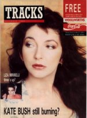

To the Reaching Out (Interviews) Table of Contents

To
the Reaching Out (Interviews) Table of Contents

(cover
courtesy of Emmy May Lombaerts)
Date: Mon Nov 13 10:30:35 1989
From: sco!scol!craig@uunet.uu.net
Subject: TRACKS Interview Nov. 1989
[From the November 1989 issue of "Tracks", Woolworth's music and video promotional magazine:]
Love, trust and Hitler
Kate Bush, the little girl who made it big, is now a woman on the eve of her seventh album. John Aizlewood discovers why she's so special
If Kate Bush were like her records, she'd be invigorating, interesting, bold, brave, and eternally hummable. She is, in fact, nice.
Not nice as in hippy-dippy or insipid or stupid, but the kind of nice which means she laughs a lot (even at your own unfunny jokes), chats a lot and looks for the good in everything. The woman with the child in her eyes.
"You can either lay an angry trip or you can lay a very intimate trip on people. There are so many emotional needs and if you can use music to bring comfort that's the ultimate thing you can do to someone. It's just that idea of making people feel happy or encouraged. Music should leave people with something positive," she trills in a squeaky voice that's almost huggable.
As she sits in front of a mixing desk at the top of Abbey Road studios, Kate Bush doesn't even look like Kate Bush. She's dressed in jeans, trainers and a jumper. She's much too small to be a Mother Earth figure and she even resembles a young Nanette Newman. Not that she's a wide eyed innocent.
"I'm tired of interviews already," she admits, having only agreed to talk to a select few in the first place. "This is the part where I have to be the saleswoman. Having spent a long time on an album you want people to hear it and know it's there. I try to enjoy promotion and get it over and done with."
The album in question is `The Sensual World'. Four years in the making, it's been a struggle.
"I wanted to take time off after the `Hounds Of Love' album. I wanted to spend some time at home, be quiet for a bit and try and think about what I wanted to say. I wrote a few songs but it didn't take me long to realise I wasn't happy with them. I went through a period where I couldn't write at all so I spent a lot of time gardening. I thought I'd lost it. I didn't have anything to say and I didn't want to go out. Nothing like that had happened to me before. I went back to it bit by bit and eventually worked it through."
Her record company knew better than to push Kate Bush.
"I'm left alone to work on albums. If there was any outside pressure I'd completely go under and probably have to be put away in an institution somewhere."
The results are quite dark and dissatisfied.
"Many of my friends have said things similar to that but what I'm trying to say is that if you're having a hard time, if things look really rough, then don't worry, everything's alright, someone will come and help you out. From darkness and dissatisfaction something really good can come. To get something worthwhile often you have to go through something difficult."
It sounds personal too.
"Yes, it's my most personal album, although that doesn't necessarily mean autobiographical. For some reason I had a tremendous need to talk about relationships and it's my most female album too."
Hence the idea of a sensual world.
"That's right. The earth is a very sensual thing, it supplies us with a tremendous amount of sensual information although most of us don't see it like that. We should be able to reach out and touch things, feel grass under our feet and look at the fantastic world. It's not a hippy image, it's what we're all meant to do. More and more people appreciate this planet and maybe that's because of some of the negative things that have been done to it."
Sadly Kate Bush won't be following up her only tour, now a decade away.
"I do think about it a lot. What's so silly is that I really enjoyed the last tour. I miss the human contact of an audience and I don't really feel like a performer any more. On the other hand, I was so tired after the last tour, it would have to be very special and I get very nervous. I'm scared too."
For now then, it's just the records.
"Right now, I'm just somebody who makes albums, and that's fine by me."
[Inset pics of the album covers:]
The Kick Inside (1978)
"I'd wanted to make an album for such a long time so there was a great feeling of achievement. I hope I've matured since then. Some of those songs were written seven years before the album appeared."
Lionheart (1978)
"It was rushed and that was responsible for me taking as much time as possible over albums. Considering how quickly we made it, it's a bloody good album but I'm not really happy with it."
Never For Ever (1980)
"From here on there are big progressive steps. I was starting to take control at this point, making sure I had enough time and getting involved in production."
The Dreaming (1982)
"My first production. A really difficult album to make. People thought I'd gone mad, the album wasn't warmly received by critics. People told me it was a commercial disaster but it reached number three so that's their problem."
Hounds Of Love (1985)
"The first in my own studio. Another step closer to getting the work as direct as possible. You cut all the crap, don't have all these people around and don't have expensive studio time mounting up. A clean way of working."
The Whole Story (1986)
"It wasn't chronological because we wanted to have a running time that was equal on both sides, otherwise you get a bad pressing. In America where I'm not very well known, they didn't realise it was a compilation!"
[text box with pic of TSW cover:]
The Sensual World (a girl/woman on the threshold of life)
"That's interesting. The subject matter is very much like that but it's meant to be a character from a book stepping into the real world. It's the first time she's been in a body."
Love and Anger (choral. Love isn't completely lovely)
"Relationships revolve around love and anger. Being in love makes you very angry sometimes and there's two sides to everything. I must be honest though, I'm not really sure what I'm trying to say here."
The Fog (lyrics of trust)
"Trust? That's nice. It's paralleling being in a relationship with learning to swim. You're too scared to put your feet down but if you did you'd find the water is only waist high and you needn't have been frightened at all."
Reaching Out (glorious piano. Instinct is a funny business)
"Yes, you can't help but reach out and touch certain things even if you think they might hurt. When children reach out to touch parents it's a lottery as to whether they'll get a clip round the ears or a cuddle."
Heads We're Dancing (bleak and scary and menacing)
"It's the darkest track on the album and not the sort of song I'd write now. The devil's task is to tempt and temptation has to be attractive. Hitler is the closest personification of evil and I mention him not to glorify but to point out he was a man who fooled a tremendous amount of intelligent people and there's no way you could blame anyone for being fooled by that man."
Deeper Understanding (ghostly vocals. Some people are in love with machines)
"This computer buff sends away for a programme that says `are you lonely? Are you lost?'. He plugs it in and out come voices of angels. In our city times we do have less and less affection for each other and become more and more isolated. Here is something real and meaningful -deep love coming out of a bloody computer!"
Between a Man and a Woman (what do you do when friends are splitting up before your very eyes?)
"Often it's not your problem. You have to do the right thing, whatever feels right. Modern relationships are plagued with these problems."
Never Be Mine (where sex and desire ooze forth)
"How interesting! God, yes. .. you're absolutely right but it's not something I was conscious of at all. It's a desire to have something you can't have, but in a lot of cases if the dream came true it would be horrible. The dream holds the fascination and power."
Rocket's Tail (not what you might think)
"Er no," (she finds this hysterically funny), "a couple of friends said this song was very phallic. I was so concerned I tried to change the `it was the biggest rocket I could find' line but `the most expensive rocket I've ever seen' wasn't quite the same. It's just the idea that a rocket is only there for three seconds but those three seconds are lived fully and totally."
This Woman's Work (from the She's Having A Baby film)
"I was thrilled to be asked to do it. It was very quick and very easy because you're just telling the story. The film is a light comedy but the woman is rushed into hospital with complications in her pregnancy and it's the first time something real and heavy has happened to the father."
Walk Down the Middle [sic] (extra track on CD/cassette. Some people are very unextreme)
"It's a bit less worked on than the other tracks. It's about trying not to get caught up in extremes. My mother was down the garden when the funny bits at the end were being played. She rushed in and said she'd heard some peacocks in the garden! How sweet! I can't take the song seriously now."
[The article is accompanied by two photos, with another on the cover, showing Kate looking her age, but still gorgeous!]

To
the Reaching Out (Interviews) Table of Contents
"The pull and the push of it all..." - Kate Bush
Reaching Out
is a
Marvick - Hill
Willker -
Mapes
Fitzgerald-Morris
Grepel - Love-Hounds
Presentation
{kind=link}